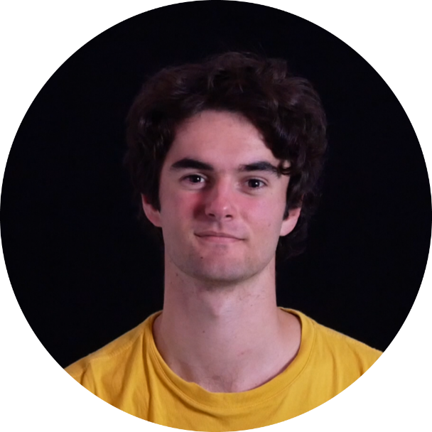

À propos de moi
Salut, moi c'est Victor ! Je suis actuellement étudiant en BUT Carrières Sociales, parcours Villes et Territoires Durables à l'IUT de Bordeaux Montaigne. Avant cela, j'ai effectué deux années de prépa intégrée à I'ENSIL-ENSCI (école d'ingénieurs à Limoges), après un bac général avec les spécialités mathématiques et physique-chimie. Mon parcours est atypique, entre sciences, technique et aujourd'hui sciences humaines et aménagement du territoire. Ce mélange m'aide à penser les villes de manière globale, avec curiosité et engagement. Je considère que la vie est une pièce de théâtre. Je fais du théâtre depuis plusieurs années, d'abord dans des compagnies, puis en théâtre d'improvisation avec une troupe étudiante. Le théâtre m'a appris à écouter, à m'adapter, à improviser, mais aussi à porter un regard sensible et décalé sur le monde. Comme le disait Shakespeare "Le monde entier est un théâtre, et tous, hommes et femmes, n'en sont que les acteurs." Le voyage à vélo est une autre manière pour moi d'explorer les territoires. J'ai réalisé plusieurs road-trips sur de longues distances, en autonomie. Voyager à vélo, c'est prendre le temps de traverser les paysages, de parler avec les habitants, de ressentir les reliefs et les transitions d'un territoire. C'est une expérience physique, mentale et humaine. Elle m'a appris la persévérance, l'orientation, l'autonomie et le goût du lien direct avec l'environnement.Ce portfolio regroupe ce que j'ai appris, ce que je sais faire, et ce que je suis en train de devenir. Il retrace mes études, mes expériences professionnelles, mes projets, mais aussi mes engagements personnels.